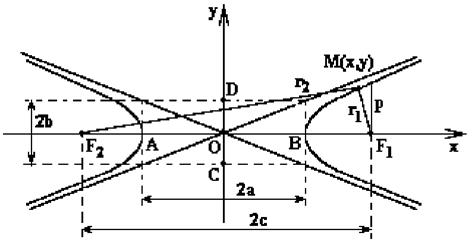
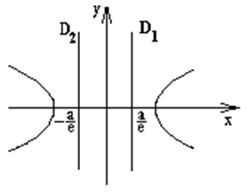

6.3 Гипербола
Гипербола – геометрическое место всех точек  , для которых абсолютная величина
разности расстояний до двух заданных точек и
(называемых фокусами
гиперболы) постоянна и равна .
, для которых абсолютная величина
разности расстояний до двух заданных точек и
(называемых фокусами
гиперболы) постоянна и равна .
, для которых абсолютная величина
разности расстояний до двух заданных точек и
(называемых фокусами
гиперболы) постоянна и равна . и  .
.
.
Элементы гиперболы
- точка
 – центр;
– центр; - точки
 и
и  – вершины;
– вершины; - точки и – фокусы;
- – фокусное расстояние;
- – действительная ось гиперболы;
- – мнимая ось гиперболы; ;
-
 Эксцентриситет
гиперболы
Эксцентриситет
гиперболы
– эксцентриситет ();
Эксцентриситет
гиперболы
Эксцентриситет
гиперболы
– эксцентриситет (); - Асимптоты гиперболы – асимптоты гиперболы;
- Фокальный параметр гиперболы – фокальный параметр гиперболы.
- Уравнение директрисы гиперболы – уравнения директрис гиперболы

Каноническое уравнение гиперболы
 Каноническое
уравнение гиперболы
Каноническое
уравнение гиперболы
Параметрические уравнения гиперболы
Параметрическое
уравнение одной ветви гиперболы
–
параметрические уравнения одной ветви гиперболы;
Уравнение гиперболы в полярных координатах
Уравнение одной
ветви гиперболы в полярных координатах
–
уравнение правой ветви гиперболы в полярных координатах, связанных с фокусом, – эксцентриситет гиперболы.